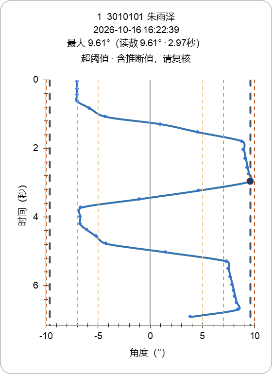

打开兼容修复版 Excel
Excel 兼容性及图表小标题修复（3.3.24）
用户反馈：Excel 提示工作簿内容有问题，图表标题太大、换行太多。
原因与修正
原来的工作表 XML 顺序修正仅在有图表的页执行。未拍摄班级页保留 excel.dart 输出的 sheetFormatPr/dimension 次序错误，Excel 要求恢复。本轮原文件复现 14 处 schema 错误；此前“XML 能解析”未覆盖 Excel schema 验证，此记录更正该验证缺口。
共用导出函数现在统一处理全部页，包括未拍摄班、空表、隐藏绘图页及汇总；修正已有格式节点的位置，不增加不存在的格式节点。回归用“有拍摄且有空班”和“全部未拍摄”两种完整工作簿。
图表标题从 11 磅改为 8 磅、非粗体，整理为姓名/时间/峰值/结果四行，阈值仍保留为图中的参考线。坐标文字统一 8 磅、缩短轴名，使用 Excel 自动布局，避免底部角度轴标题压住 0 刻度。外部图表大小、打印锚点、所有角度与时间数值保持不变。
现有文件另存“093022_兼容修复版.xlsx”，保留原文件。修复工具校验全部单元格和完整曲线序列内容不变，保留原生命名空间（包括 mc:Ignorable 使用的扩展前缀）、图表和打印设置。
实际验证
- 原文件 OpenXML 错误 14；修复版、混合班级测试及全部未拍摄测试均为 0。
- 独立 Microsoft Excel 16.0 隐藏实例打开修复版，RepairMode=false，8 张原生图表保留；Excel 导出实际图表 PNG 后关闭此测试实例。
- Excel实际渲染.png 是 Microsoft Excel 原生 Chart.Export 的结果。先前固定绘图区布局导致角度轴标题与刻度相挤，已改自动布局并重新渲染核对。
- 18 项相关 Flutter 回归通过，静态分析无问题。首次新增回归先失败，再修正导出后通过，日志分别保留。
- 数据及 +1° 显示处理逻辑未变。本轮不修改模型、DLL、原始数据库，不烧录开发板。
代码与交付
Flutter 源码：2706882d47e53c4ea790b86a0ef81944b7fb1b97。生成版本 3.3.24；旧安装包不覆盖，原用户运行实例未自动替换。
开发辅助：tool/validate_record_workbook.ps1 使用本机 Office 附带的 OpenXML SDK 校验；tool/repair_record_workbook.py 修复既有 Scoliosis 图表工作簿副本。两者不进入安装运行依赖。
